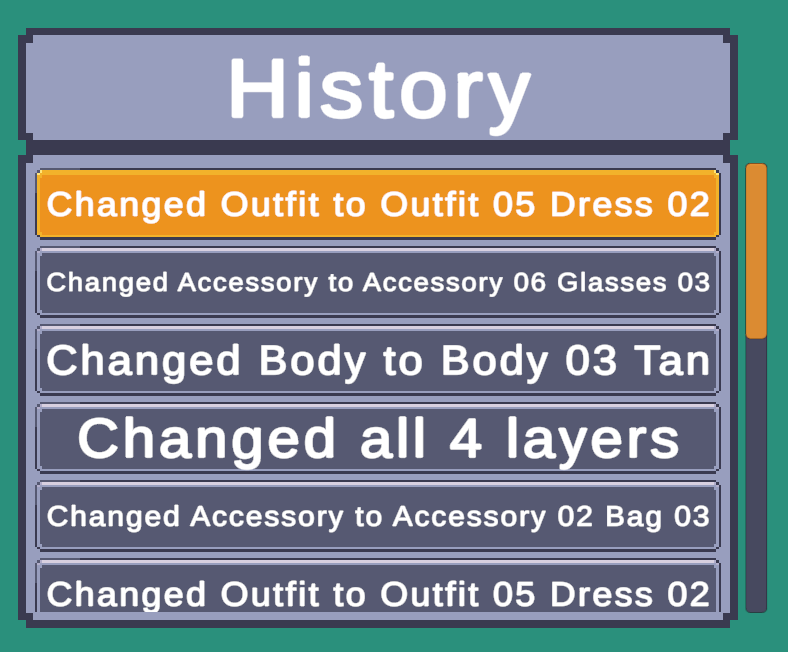
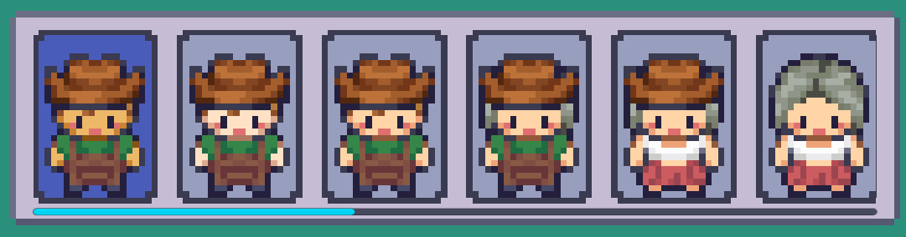

History Panels
A History Panel displays a list of snaphots saved in the History Tracker component for the player to view and restore any changes they've made.
Tip
Prefabs Location: Prefabs > Character Creator > History > History Panels
Panel Type Prefabs
- History Panel [Text, Vertical List]
- A vertical, text based list. Each entry displays text containing what changed in the assigned character snapshot.
- 
- History Panel [Sprite, Horizontal List]
- A horizontal, sprite based list. Each entry contains a list of sprites, each sprite displays a layer in the assigned character snapshot.
- 
Entry Prefabs
The following are entries used in the above mentioned panels.
- History Panel Entry [Text]
- Entry displaying text which describes what changed in the assigned snapshot.
- History Panel Entry [Sprite]
- Entry containing a dynmaic list of sprites. Each sprite displays a layer in the assigned character snapshot.
Tip
Entry prefabs live in the /History List Entries subfolder.
Custom Prefabs
You can create your own history panel entry easily. Here are the steps
- Create a new game object and add the HistoryPanelEntry component.
- Set the display mode:
- Text - Requires reference to a text objcet.
- Sprite - Requires reference to layer preview sprites parent. (The parent game object sprites will be instantiated to)
- Text And Sprite - Requires both aforementioned references.
- Add the
Togglecomponent and reference it in theHistoryPanelEntrycomponent. - Add an
Imagecomponent - This will be the background image. - Set the
Target Graphicon thetoggleto the image component. - Add a new child game object and add another
Imagecomponent to it. - Name the new child game object something like Highlight. - This game object will only be active when the entry is selected.
- Set the
Graphicon thetoggleto the image component on the Highlight game object. - Turn your game object into a prefab by dragging it into a folder in the project window.
- Finally, on the CCMHistoryPanel component which lives on all History Panels, set the
Entry Prefabto reference your new prefab.
Confused?
Checkout one of the pre-existing entry prefabs to see how they're setup.